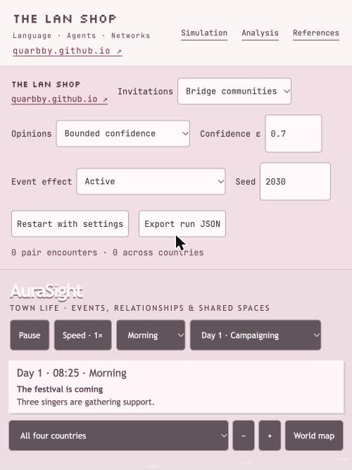
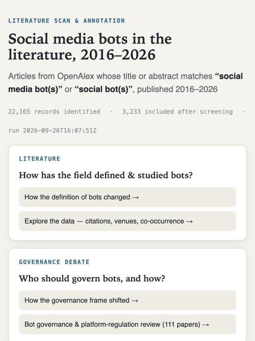
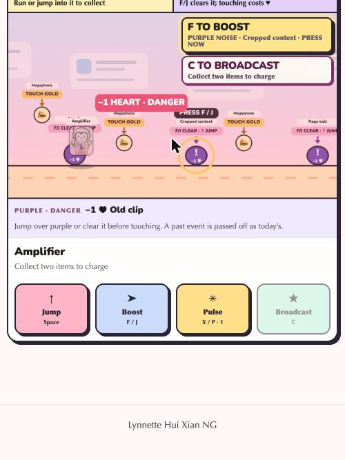
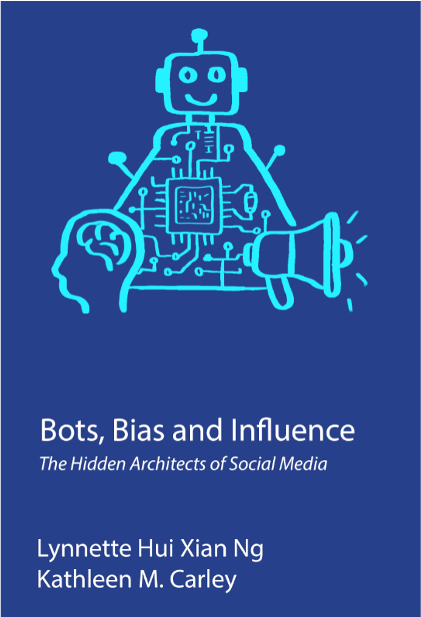

Societal Computing research · Affiliate Researcher, Carnegie Mellon University · Deputy Head (Information Management), DSTA Singapore · Principal Investigator, The LAN Shop
I study how AI agents (bots) and humans interact in online communities, and how automated persuasion shapes those communities. My methods draw on network science, computational social science, and natural language processing.
I lead The LAN Shop — Language, Agents, and Networks — at the Information Programme Center, DSTA, Singapore. I obtained my PhD in Societal Computing from the Department of Computer Science at Carnegie Mellon University, advised by Prof. Kathleen Carley, where I received the Best Dissertation Award, for the foundational impact and influence of my research. I received my B.Comp. from the Department of Computer Science, National University of Singapore, where I was awarded the NUSS Medal for Outstanding Achievement.
My work on social media bot detection includes BotBuster, a multi-platform bot detector, and BotSorter, which classifies an account's role rather than simply bot-or-human. I also study coordinated inauthentic behavior — telling synchronized account activity apart from coincidence, as in my work on the Combined Synchronization Index (CSI) — and build LLM-augmented agent-based models of online societies, such as BotSim, to simulate bot personas and belief contagion at scale.
Selected themes — see the full research page for details and papers.
Detecting and characterizing automated and human-automated hybrid accounts across platforms.
Finding coordinated, synchronized behavior and influence campaigns in online networks.
Applied graph theory and dynamic network analysis of online social structures.
Simulating social media bot personas and persuasion dynamics with large language models.

Visualizing and generating realistic social media data.

A retrospective literature review on a decade of social bot research.

A mini game based on the BotBuster Universe.
More projects, talks, and media on the Resources page.

My thesis, Foundations of Cyber Social Agents, is available to read here.
A portion of the thesis was adapted into the trade book Bots, Bias, and Influence: The Hidden Architects of Social Media (Cambridge Scholars Publishing). Amazon · Publisher. Email me for a discount code or to arrange a book review.
@book{ng2026bots,
title={Bots, Bias, and Influence: The Hidden Architects of Social Media},
author={Ng, L.H.X. and Carley, K.M.},
isbn={9781036473112},
url={https://books.google.com/books?id=dnTtEQAAQBAJ},
year={2026},
publisher={Cambridge Scholars Publishing}
}
Selected recent talks — full list on the Resources page.
I was born with hypertrophic cardiomyopathy and lived with it for 29 years, including two pacemakers, before receiving a heart transplant at UPMC Presbyterian in March 2023. It's a whirlwind story I'm still writing — read and subscribe here.
Outside of research, I play violin with the Pittsburgh Philharmonic Orchestra and love exploring Pittsburgh and the wider United States. Some of that shows up on my Instagram, which has been featured by CMU's School of Computing.